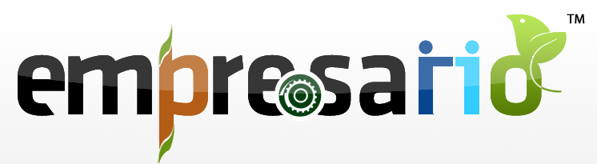
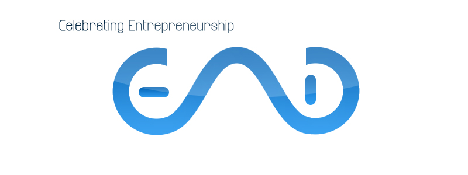
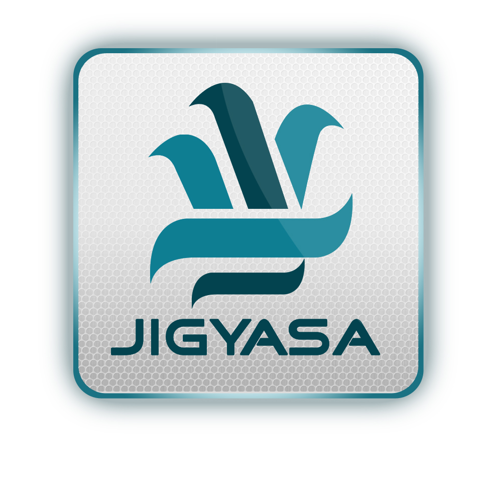
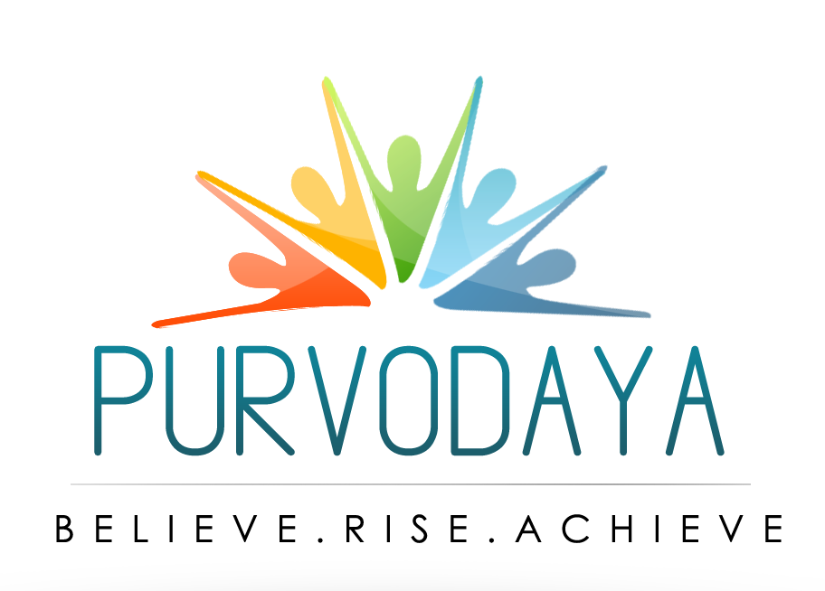

Portfolio
Logo Designs
- Empresario - Annual Business Plan Competition of Entrepreneurship Cell, IIT Kharagpur
 - EAD - Entrepreneurship Awareness Drive organized by Entrepreneurship Cell, IIT Kharagpur
 - Jigyasa - A start-up in Kharagpur in Education Sector. The logo depicts the Delasoni symbol for 'Knowledge'
 - Jyukebox - An Internet Radio that sources from various MP3 websites.
- Purvodaya - Annual Management Fest of VGSOM IIT Kharagpur.
 - EAD - Entrepreneurship Awareness Drive, organized by E-Cell, IIT Kharagpur.